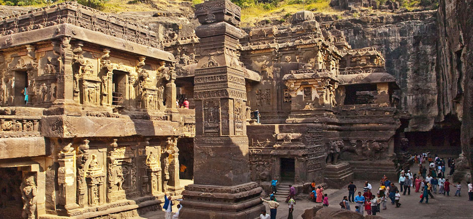

|

|
The Ajanta Caves are about 29 rock-cut Buddhist cave monuments which date from the 2nd century BCE to about 480 CE in Aurangabad district of Maharashtra state of India.[1][note 1] The caves include paintings and rock cut sculptures described as among the finest surviving examples of ancient Indian art, particularly expressive paintings that present emotion through gesture, pose and form.
According to UNESCO, these are masterpieces of Buddhist religious art that influenced Indian art that followed.[5] The caves were built in two phases, the first phase starting around the 2nd century BCE, while the second phase built around 400–650 CE according to older accounts, or in a brief period of 460–480 CE according to later scholarship.[6] The site is a protected monument in the care of the Archaeological Survey of India,[7] and since 1983, the Ajanta Caves have been a UNESCO World Heritage Site.
The Ajanta Caves constitute ancient monasteries and worship halls of different Buddhist traditions carved into a 250 feet wall of rock.[8][9] The caves also present paintings depicting the past lives and rebirths of the Buddha, pictorial tales from Aryasura's Jatakamala, as well as rock-cut sculptures of Buddhist deities.[8][10][11] Textual records suggest that these caves served as a monsoon retreat for monks, as well as a resting site for merchants and pilgrims in ancient India.[8] While vivid colours and mural wall painting were abundant in Indian history as evidenced by historical records, Caves 16, 17, 1 and 2 of Ajanta form the largest corpus of surviving ancient Indian wall-painting.[12]
|